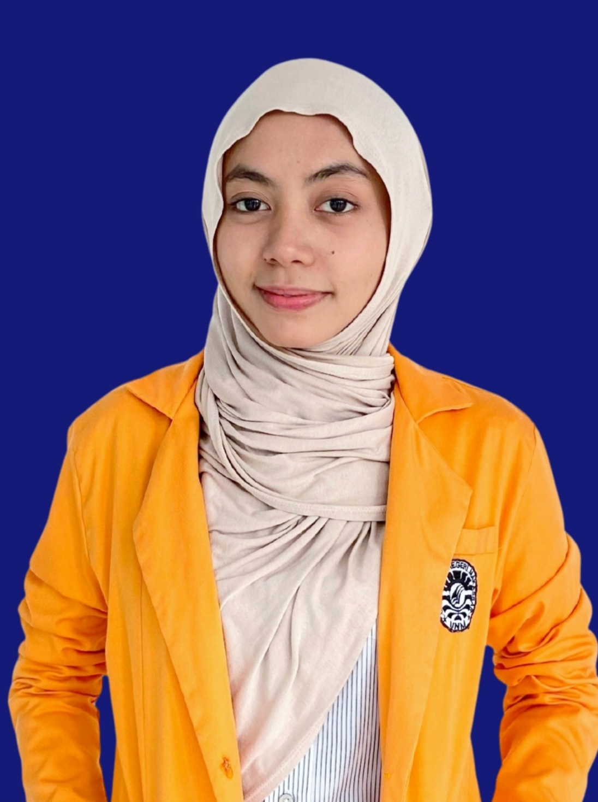

☀️ FASE D · IPA KELAS VII ☀️
ASTRO-EXPLORER
Petualangan Interaktif Menjelajahi Sistem Tata Surya bersama Astro.
Petualangan Interaktif Menjelajahi Sistem Tata Surya bersama Astro.

Dosen Pembimbing

Dosen Pembimbing

Dosen Pembimbing

Pengembang

Pengembang

Pengembang

Pengembang

Pengembang
Tonton video pemantik sistem Tata Surya di bawah ini sebelum kita memulai penjelajahan:
CP: Peserta didik mengelaborasikan pemahamannya tentang posisi relatif bumi-bulan-matahari dalam sistem tata surya dan memahami struktur lapisan bumi.
Tujuan: Melalui kegiatan eksplorasi aplikasi Solar System Scope, peserta didik dapat menjelaskan karakteristik planet dengan tepat.
Tata Surya adalah keluarga besar di alam semesta yang terdiri dari Matahari sebagai pusatnya, dikelilingi oleh 8 planet, satelit alami, serta miliaran benda langit lainnya.
Planet terdekat dari Matahari, tidak punya atmosfer.
Planet paling panas akibat efek rumah kaca yang parah.
Satu-satunya planet yang memiliki air cair dan kehidupan.
"Planet Merah" yang tanahnya kaya besi berkarat.
Planet terbesar. Memiliki badai raksasa "Bintik Merah Besar".
Terkenal dengan sistem cincin esnya yang megah.
Planet es raksasa yang berputar miring.
Planet paling jauh dengan angin badai super kencang.
Pelajari materi selengkapnya! Geser slide menggunakan tombol di bawahnya.
Manipulasi waktu, putar layar, dan klik planet untuk melihat struktur dalamnya secara 3D!
Berdasarkan observasi Anda di simulasi Solar System Scope, apa yang menjadi ciri khas dari planet berikut:
a. Bumi
b. Saturnus
c. Jupiter
Kerjakan kuis interaktif Kahoot secara langsung pada panel di bawah ini!